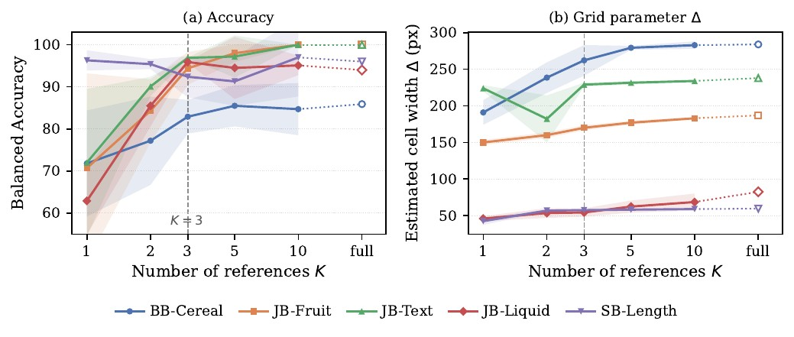
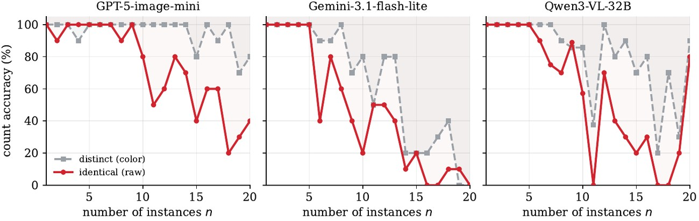
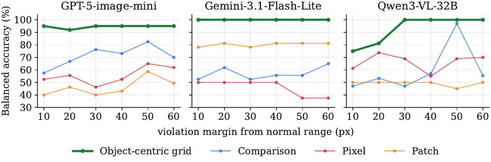

A conference paper has a page limit; a project page does not. Everything below was written for the paper and cut for space — the grid solver's proofs, the reference sensitivity study's figure, and the versions of two probes that were run on three backbones rather than the one the paper had room to print.
Notation follows the paper: \(w\) is the grid's cell width, \(a\) its offset, \(m\) the reading margin and \(w_{\min}\) the legibility floor. Two of the figures were drawn before the notation settled and still label the cell width \(\Delta\); it is the same quantity as \(w\).
The paper states the single-group case in closed form, \(w^{\ast} = \max(w_{\min},\, \rho + 2m)\), and gives the algorithm that generalises it. The two propositions that justify the algorithm — why a feasible offset forms an interval, and why the search over \(w\) can be bracketed — were cut. They are the reason the solver can scan a small range and stop at the first feasible width rather than optimise.
For each axis, let each edge group \(g\) collect \(K\) reference coordinates with range \(R(g) = \max_i r_i - \min_i r_i\). The margin \(m\) absorbs the model's reading noise. A grid \((w, a)\) partitions the axis into cells \(B_k = [\,a + kw,\; a + (k{+}1)w\,)\).
Proposition 1 (per-group feasibility)
The offsets \(a \in [0, w)\) that place every coordinate of group \(g\) in one cell with margin \(m\) form the circular interval
\[ I_g(w) \;=\; \bigl[\,\max_i r_i - w + m,\;\; \min_i r_i - m\,\bigr] \pmod{w}, \]of length \(w - R(g) - 2m\), non-empty if and only if \(w \ge R(g) + 2m\).
Proof. Containment requires \(a + kw + m \le r_i \le a + (k{+}1)w - m\) for all \(i\). The lower bound gives \(a + kw \le \min_i r_i - m\); the upper bound gives \(a + kw \ge \max_i r_i - w + m\). Reducing modulo \(w\) yields the stated interval, whose length is \(w - R(g) - 2m\). ∎
Proposition 2 (bracketing \(w^{\ast}\))
Let \(W_g := R(g) + 2m\) and define
\[ w_{\mathrm{lb}} := \max\bigl(w_{\min},\, \max_g W_g\bigr), \qquad w_{\mathrm{ub}} := \max_{\mathrm{ax}} \sum_{g \in G_{\mathrm{ax}}} W_g \;+\; 1. \]Every \(w < w_{\mathrm{lb}}\) is infeasible, and every \(w \ge w_{\mathrm{ub}}\) is feasible.
Proof. If \(w < \max_g W_g\), the tightest group has negative interval length, so by Proposition 1 no offset works. If \(w \ge \sum_g W_g + 1\), the interval lengths sum to more than \(w\) on \([0, w)\), which guarantees a non-empty intersection. ∎
The optimal \(w^{\ast}\) is therefore found by scanning \([w_{\mathrm{lb}},\, w_{\mathrm{ub}}]\) and returning the first width admitting an offset on both axes — at most about 50 values in practice. Total cost is \(O(K \times J)\) over \(K\) references and \(J\) constraints, effectively constant for \(K = 3\), \(J \le 5\).
Require: \(\{r_k^{g}\}\) for all groups \(g\) on both axes, \(w_{\min}\), \(m\)
Ensure: \((w^{\ast},\, a_x^{\ast},\, a_y^{\ast})\)
1 for each group \(g\) do
2 \(W_g \gets R(g) + 2m\)
3 \(w_{\mathrm{lb}} \gets \max(w_{\min},\, \max_g W_g)\)
4 \(w_{\mathrm{ub}} \gets \max_{\mathrm{ax}} \sum_{g \in G_{\mathrm{ax}}} W_g + 1\)
5 for \(w = w_{\mathrm{lb}}\) to \(w_{\mathrm{ub}}\) do
6 for each axis \(\mathrm{ax} \in \{x, y\}\) do
7 \(I_{\mathrm{ax}} \gets \bigcap_{g \in G_{\mathrm{ax}}}
\bigl[\max_k r_k^{g} - w + m,\; \min_k r_k^{g} - m\bigr] \bmod w\)
8 if \(I_x \ne \emptyset\) and \(I_y \ne \emptyset\) then
9 return \((w,\; a_x \in I_x,\; a_y \in I_y)\)
The released implementation of this solver is
cascade/calibrate.py.
It follows the same bracket-and-scan structure and adds the bookkeeping a real image needs —
assigning boundary pixels to edges, discarding excursions, and handling an object that
shifts bodily between references.
The grid estimates its cell width from \(K\) references, so \(K\) governs how reliably the normal range is recovered. The disambiguation scaffold takes its configuration from the constraint text and is unaffected by \(K\), so this study covers calibration constraints only. The paper reports the numbers; the figure was cut.

At \(K = 1\) a single reference cannot span the normal range, so the width is underestimated, the grid comes out too narrow, and normal queries are misread as violations. JB-Fruit reaches only \(70.7\) balanced accuracy with a standard deviation of \(22.5\) across reference sets, and BB-Cereal only \(71.8 \pm 12.6\).
As \(K\) rises to 3 the estimated width converges toward its full-reference value and the spread contracts sharply; accuracy follows, with JB-Fruit rising to \(94.4 \pm 3.9\) and BB-Cereal to \(82.9 \pm 4.0\). The margin \(m\) absorbs what remains of estimating a range from finitely many references, which is why the parameter converging translates into stable accuracy. Beyond \(K = 3\), going to 5 or 10 yields negligible gain, so we fix \(K = 3\) — the point where reference acquisition cost and accuracy balance.
Two of the analysis probes were run on three backbones. The paper had room for one panel each and printed GPT-5-image-mini. The full versions are below, and they matter for a reason the single panel cannot show: the failure being diagnosed is a property of the task, not of one model's quirks.


These are the probes behind the paper's two design claims — that instance conflation is what the disambiguation scaffold has to fix, and that an object-anchored discrete grid is the form the alignment scaffold has to take. Seeing them replicate across three backbones is the evidence that the scaffolds are addressing the task rather than one model.